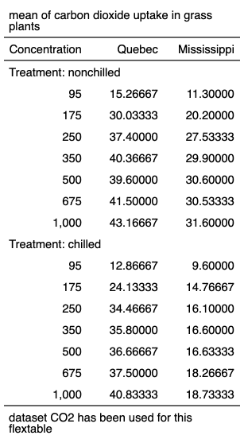

| as_flextable.grouped_data {flextable} | R Documentation |
produce a flextable from a table
produced by function as_grouped_data().
## S3 method for class 'grouped_data' as_flextable(x, col_keys = NULL, hide_grouplabel = FALSE, ...)
x |
object to be transformed as flextable |
col_keys |
columns names/keys to display. If some column names are not in the dataset, they will be added as blank columns by default. |
hide_grouplabel |
if TRUE, group label will not be rendered, only level/value will be rendered. |
... |
unused argument |

Other as_flextable methods:
as_flextable.gam(),
as_flextable.glm(),
as_flextable.htest(),
as_flextable.lm(),
as_flextable.xtable(),
as_flextable()
library(data.table)
CO2 <- CO2
setDT(CO2)
CO2$conc <- as.integer(CO2$conc)
data_co2 <- dcast(CO2, Treatment + conc ~ Type,
value.var = "uptake", fun.aggregate = mean)
data_co2 <- as_grouped_data(x = data_co2, groups = c("Treatment"))
ft <- as_flextable( data_co2 )
ft <- add_footer_lines(ft, "dataset CO2 has been used for this flextable")
ft <- add_header_lines(ft, "mean of carbon dioxide uptake in grass plants")
ft <- set_header_labels(ft, conc = "Concentration")
ft <- autofit(ft)
ft <- width(ft, width = c(1, 1, 1))
ft